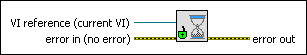

Unset Busy VI
Owning Palette: Cursor VIs
Requires: Base Development System
Changes the appearance of the cursor on the front panel of a VI from a busy cursor to the default LabVIEW cursor and enables the mouse on the front panel.
Use this VI only after you use the Set Busy VI.
(Real-Time Module) You cannot use this VI in VIs that run on RT targets.

 Add to the block diagram Add to the block diagram |
 Find on the palette Find on the palette |